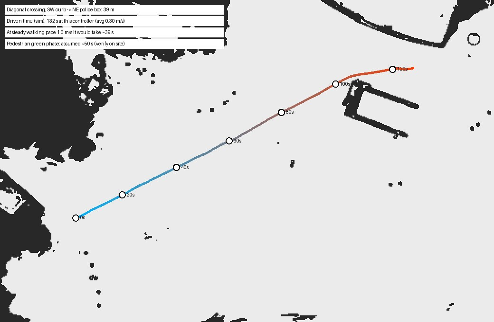
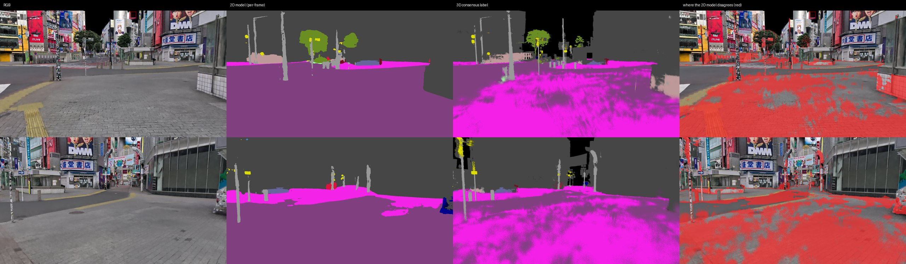
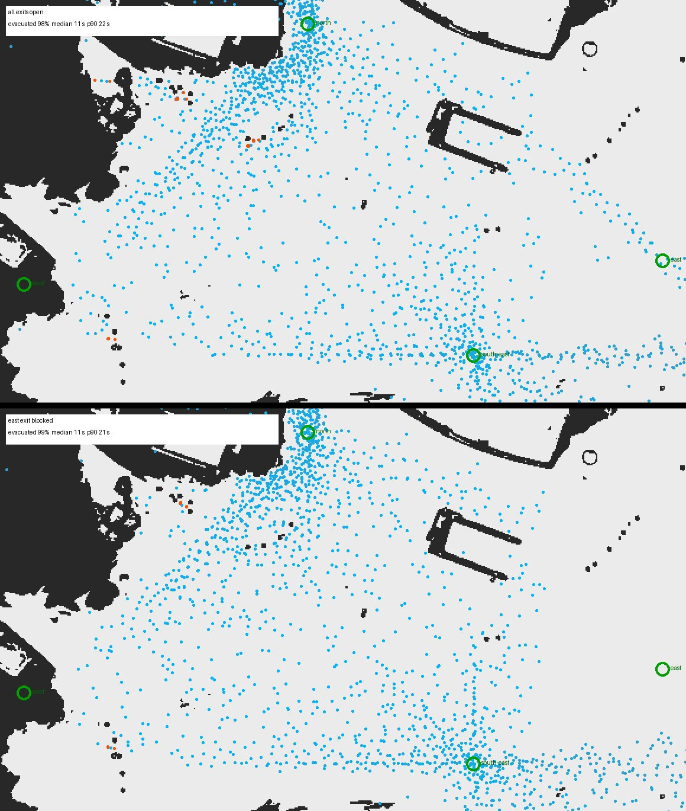

01 横断歩道を青のうちに渡り切れるか

配送ロボットが最初に問われるのがこれです。結果は「経路は正しくても、制御が遅ければ渡り切れない」——青の時間（現地の実測はまだで、数十秒と仮定）に対して、直進の速さより曲がり角や進路修正での失速が支配的でした。同じ環境で制御を変えて時間を比べられるので、渡り切りに必要な速度計画をロボット導入前に詰められます。分からないこと：信号の実サイクル、他の歩行者による減速（02へ）。
02 動く歩行者との共存（止まれるか）
スクランブル交差点特有の「全方向から人が来る」状況で、ロボットが止まれるか・再発進できるかを確かめました。LiDARは3DGSの街と歩行者役の両方をきちんと捉え、横切りに対して停止・再発進しました。分からないこと：本物の人の動き（避け合い・立ち止まり）は入っていません。人流データと歩行者エージェントを入れると、この環境の価値が一段上がります。
03 看板だらけの視覚環境で知覚はどこで迷うか

巨大サイネージ・反射ガラス・路面のペイントは、実物のスキャンでこそ再現できる「視覚ノイズ」です。同じ場所を多方向から見せると、2Dモデルは石畳の広場・細い柱・柵で判定を変えました。分かること：自分のモデルがこの街のどこで弱いか、失敗事例を集められる。分からないこと：正解は人手で付けていないので「精度」ではなく「揺れ」の把握まで。
04 言葉で指定したランドマークへ行けるか

言語で目的地を指定するナビゲーション（VLN）の評価場として、実在のランドマークで課題を書けるのは大きな利点です。今回は「言葉→地図上の座標」を人手で対応付け、そこへ自律で走らせました。4課題すべて到達。分からないこと：言葉から目的地を理解する部分（言語モデル側）は未接続で、課題集も4本だけです。
05 避難時の人の流れと出口の効き方

災害時の避難や、ロボットによる誘導を考えるための基礎データです。実在の柵・交番・地下入口の配置の上で流したので、「どこが詰まるか」が地形から出ます。分からないこと：人の動きは簡易モデル（最寄り出口へ一定速度、押し合いは簡略）で、実際の避難行動や人数の実測とは合わせていません。定量ではなく傾向を見るためのものです。
06 巡回経路の死角はどこか
冒頭の図です。巡回1往復で周囲の路面の85%は視認でき、残る死角は交番の裏・ポールと車止めの陰・建物の凹みでした。実在の配置だからこそ出る答えで、警備ロボの巡回経路やカメラの増設位置を、現地に行く前に議論できます。分からないこと：センサの高さは1種類、動く物（人・車）による一時的な遮蔽は入れていません。
07 センサ機種の違いは同じ街でどう出るか

実在機種のプリセットを差し替えるだけで、機体設計の材料になります。分からないこと：反射率や雨・霧、実機との強度合わせは未実施なので、比較できるのは密度と範囲まで。今回の構成では1環境に同時に置けるLiDARが1台で、機種ごとに環境を開き直しました。
08 時間帯（影）の違いに耐えられるか

昼間の時間帯変化に対する見た目の頑健性なら、この合成でテスト画像を作れます。できないこと：夜景・雨天・ネオン点灯はこの方式では作れません（色は焼き込みのため）。「影だけ」と割り切って使う項目です。
09 段差・縁石は越えられるか
やってみて分かったのは、この交差点の横断歩道まわりには段差がほとんど無い（バリアフリー化されている）ことでした。Nova Carterは車線上の路面の凹凸を歩く速さで問題なく通過し、そのまま角の建物の壁で止まりました。縁石走破の評価には段差のある別の地点が要ります——前回の車両型は歩道の段差を越えているので、機体ごとの比較は場所を選べば可能です。
10 イベント設営の事前検証

ロボット以外の用途です。仮設物の位置と実在の構造物の干渉、カメラからの見え方、動線の空きを、実寸の街で確認できます。ロケハン3D本業との相乗効果が最も大きい項目で、機材リストの寸法さえあれば同じ手順で置けます。
11 まとめ：使えるもの・使えないもの
- 今日から使える：01横断時間、02停止・再発進、04ランドマーク到達、06死角、07センサ比較、10設営検証。いずれも「実在の配置」が答えを左右する項目で、現地に行く前の判断材料になります。
- 傾向まで：03知覚の揺れ（正解無し）、05避難流動（簡易モデル）、08時間帯（影のみ）。
- 場所を選ぶ：09段差（この交差点には段差が無い）。
- 共通の限界：人手の正解データと実機ログとの突き合わせが無いこと、動く人が簡易モデルであること。次に足すべきはこの2つです。
ロケハン3Dでは、実在の空間を
シミュレーションに使える形でスキャンします
屋外・屋内を問わず、Isaac Sim向けの2層環境・占有格子・センサ出力まで揃えてお渡しできます。「うちの現場でこの10本のどれをやるか」からご相談ください。
スキャンの相談をする →